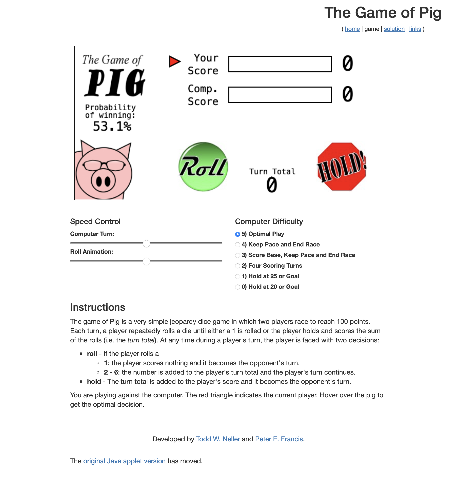
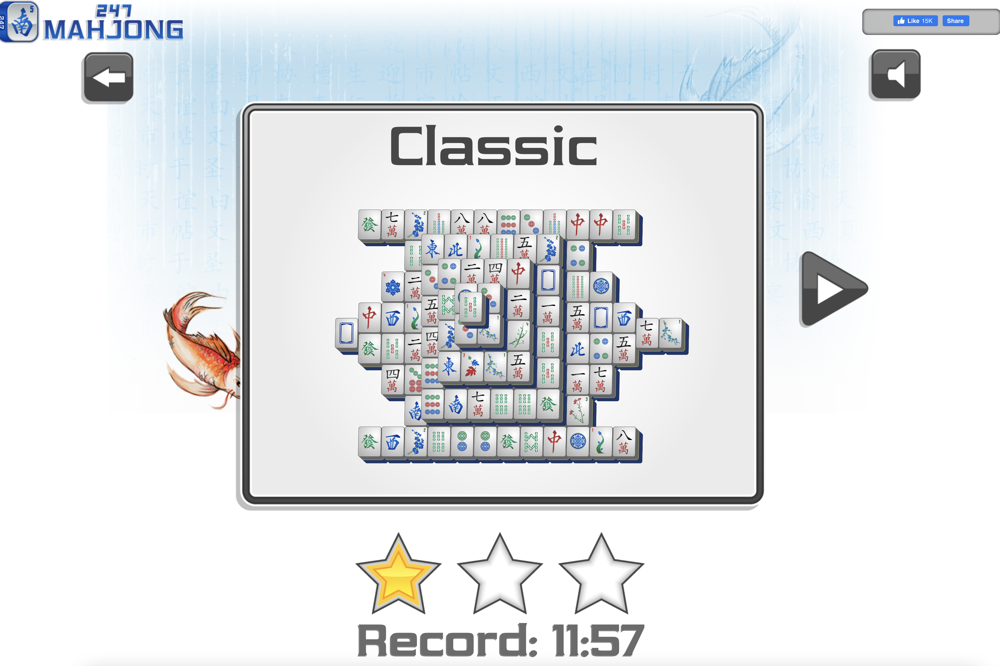

Project Summary
This project is the implement version of PIG game with a package delivery theme. It will have a major interface change and whole new level of game complexity.
Comparison Project 1
 PIG GAME BY GETTYSBURG →The reason I chose this website is that the rules, and the way the game works. This inspired me to set more rules while users are playing. So the game will more more fun! Also it only have one dice, it give user an option to play with computer.
Comparison Project 2
 MAHJONG GAME →This Mahjong game is not what I was trying to build, but it give me an idea of the game interface. The Mahjong have different type of pattern for each player. I want to apply this method to the different delivery truck with number on it. It also inspired me to stylish my game more, so it won't looks too official!
Project Goals
To implement the PIG game with more fun and better user experience.
Interaction Strategies
A better feedback for the instructions of what to do next, such as highlight player name, or use different background color for the 'gameinfo' section. Enhance the "start again" part where now takes user back to the first page to two buttons. Therefore, user don't need to re-enter the name every time. Creating a storyline that could interested users.
Experience Goals
The goal is to keep user in the game longer without being bored at the game by offering better Interactions, enhanced interfaces, and funner yet more complex game.